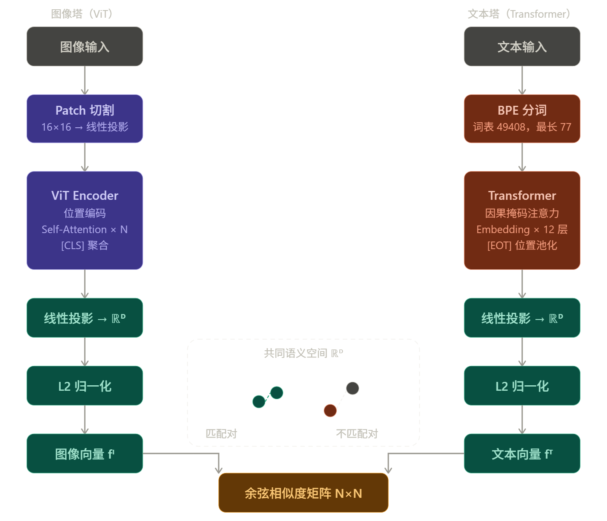
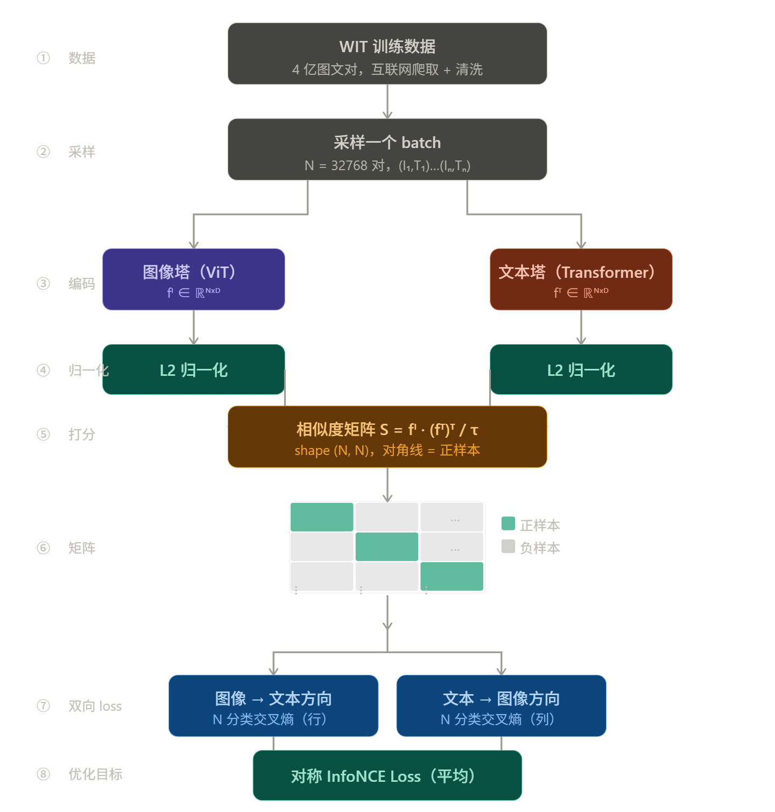

文本编码器（CLIP / T5）
1 概览
文本编码器在文生图系统里扮演的角色是翻译官：把人类写的 Prompt 翻译成向量语言，让图像生成网络能"听懂"文字描述。
从功能上看，它的输入是一段文本，输出是一个形状为 [seq_len, dim] 的向量矩阵。这个矩阵里的每一行是一个 token 的语义向量，整个矩阵会作为 Cross-Attention 的 K 和 V，告诉图像生成网络"每个区域应该长什么样"。
不同文生图系统使用的文本编码器有所不同，但核心问题只有一个：如何把一串 token 压缩成对图像生成有用的语义向量？
2 CLIP
2.1 背景
在 CLIP 之前，图文联合表示的主流方案是监督预训练：先在 ImageNet 上训练图像分类器，再用对应的文字标签做对齐。这个方案有两个根本缺陷：一是类别是固定的，无法描述"一只穿着宇航服坐在月球上的猫"这类开放概念；二是标注数据规模有限，上限很低。
CLIP（Contrastive Language-Image Pre-training，OpenAI 2021）的核心洞察是：互联网上已经有海量的图文对——每一张新闻图片配的说明文字、每一条带图的社交媒体帖子，都是天然的监督信号。只需要让图像向量和对应文字向量在空间里靠近，让不匹配的远离，模型就能学到开放世界的视觉-语言对齐。
这个思路来自对比学习（Contrastive Learning），关键在于把监督信号从"类别标签"换成了"图文配对关系"，数据量从百万量级直接跳到了4 亿图文对（WIT 数据集，从互联网爬取并过滤）。
2.2 双塔结构
CLIP 是一个双塔（Dual Encoder）模型，两个编码器独立运行，只在最后的相似度计算阶段汇合。

两个塔的输出向量维度相同（\(D\)），都经过 L2 归一化，这样点积就等于余弦相似度，值域在 \([-1, 1]\) 之间。
图像塔：ViT
原始论文同时测试了 ResNet 和 ViT，最终 ViT 方案效果更好，后续工作普遍采用 ViT。
ViT（Vision Transformer）的处理流程：
- 把图像切成固定大小的 patch（如 \(16\times16\) 像素）
- 每个 patch 展平后经过线性投影变成向量
- 加上位置编码和一个特殊的
[CLS]token - 送入标准 Transformer Encoder 堆叠
- 取
[CLS]位置的输出向量作为整张图像的表示
文本塔：Transformer Encoder
文本塔是一个标准的 Transformer Encoder-only 架构，结构和 GPT 相近（但用的是因果掩码还是双向注意力取决于实现版本——OpenAI 原版 CLIP 的文本塔实际上用的是因果掩码，即类似 GPT 的单向注意力，而不是 BERT 式的双向注意力）。
Note
这是一个容易搞错的细节。OpenAI 原版 CLIP 文本塔用的是因果掩码（Causal Mask），每个 token 只能看到它左边的内容。这和 BERT 的双向注意力不同。之所以不影响效果，是因为 CLIP 文本塔的训练目标是产出 [EOS] 位置的 pooled 向量来代表整句语义，因果掩码下 [EOS] 位置天然能汇聚整个序列的信息（它是最后一个 token，能看到所有之前的内容）。
文本塔的关键参数：
- 输入最大长度：77 个 token（BPE 分词，词表大小 49408）
- 文本头尾分别加
[SOT]（Start of Text）和[EOT]（End of Text）特殊 token - 输出取
[EOT]位置的向量作为整句的池化表示（pooled representation） - 最后过一个线性投影层，把维度对齐到图像塔的输出维度 \(D\)
| 模型 | 层数 | 维度 | 注意力头 | 输出维度 \(D\) |
|---|---|---|---|---|
| CLIP-B | 12 | 512 | 8 | 512 |
| CLIP-L | 12 | 768 | 12 | 768 |
Note
77 token 的限制来自原始实现中固定大小的位置编码矩阵（shape [77, dim]）。这不是 Transformer 架构本身的限制，而是实现时的一个选择。在文生图工程实践中这个限制必须牢记：超出 77 个 token 的 Prompt 会被直接截断，后面的描述完全失效。这也是为什么提示词工程的第一条建议通常是"把最重要的关键词放在前面"。
2.3 训练目标与 InfoNCE Loss
对比学习的核心思路
一个 batch 里有 \(N\) 个图文对：\((I_1, T_1), (I_2, T_2), \ldots, (I_N, T_N)\)。
经过两个编码器，得到 \(N\) 个图像向量和 \(N\) 个文本向量，计算所有两两组合的余弦相似度，构成一个 \(N \times N\) 的矩阵：
其中对角线 \(S_{ii}\) 是正样本（图文匹配），非对角线 \(S_{ij}\ (i \neq j)\) 是负样本（图文不匹配）。
训练目标是让这个矩阵"尽可能接近单位矩阵"——对角线接近 1，非对角线接近 0。
InfoNCE Loss 的推导
CLIP 用的损失函数是 对称的 InfoNCE（Symmetric Cross-Entropy Loss）。
先看单方向——以第 \(i\) 张图像为查询，在 \(N\) 个文本里找到正样本：
这就是一个 \(N\) 分类的交叉熵：分子是正样本的得分，分母是所有 \(N\) 个候选（含正样本）的得分之和。模型需要在 \(N\) 个文本里把正确的那个排到最高。
同理，以第 \(i\) 个文本为查询，在 \(N\) 张图像里找正样本：
最终损失取两个方向的平均：
对称性的意义：单向损失只优化"给定图像找文本"，双向损失同时优化"给定文本找图像"。两个方向的梯度信号叠加，让两个塔的向量空间对齐更充分。
温度系数 \(\tau\) 的作用
\(\tau\)（温度，Temperature）是一个可学习的标量，初始化为 \(\log(1/0.07) \approx 2.66\)，对应 \(\tau \approx 0.07\)。
\(\tau\) 控制相似度分布的"尖锐程度"：
- \(\tau\) 小（如 0.07）：softmax 分布非常尖锐，正样本要以压倒性优势高于负样本，梯度信号强，但训练不稳定
- \(\tau\) 大（如 1.0）：softmax 分布平缓，对排名差异不敏感，训练稳定但对齐效果差
CLIP 让 \(\tau\) 可学习，并加了一个下限 \(\tau \geq 0.01\) 防止训练崩溃。实验证明可学习 \(\tau\) 比固定值效果更好。
大 batch size 的重要性
InfoNCE Loss 有一个关键性质：batch 越大，每个正样本面对的负样本越多，学到的对齐越精细。
从信息论角度：\(N\) 个负样本意味着模型需要在 \(N\) 个候选里正确区分，batch 越大，任务越难，学到的向量空间越有区分度。
CLIP 原始训练用了 32768 的 batch size（\(N = 32768\)），每对正样本同时面对 32767 个负样本。这个规模在当时是工程挑战，需要在多机多卡上同步 batch，梯度通信的开销很大。这也是 CLIP 只有大公司才能复现的原因之一。
2.4 完整训练流程

训练完成后，两个塔的参数固定。推理时只需要单独调用任意一个塔：
- 图像检索：把所有候选图像过图像塔，得到向量库；查询文本过文本塔，用最近邻搜索找最匹配的图像
- 零样本分类：把类别名称包装成文本（"a photo of a dog"），过文本塔得到类别向量；测试图像过图像塔，取相似度最高的类别
2.5 在文生图里的用法：从 pooled 到 token 序列
CLIP 原始设计里，图像塔和文本塔各自输出一个单一向量（pooled representation），用来计算图文相似度。但文生图对 CLIP 的使用方式有所不同。
原始 CLIP 的输出：
- 图像塔输出：
[CLS]位置的向量，shape[D]（单一全局向量） - 文本塔输出：
[EOT]位置的向量，shape[D]（单一全局向量）
文生图里的改造用法：
| 用法 | 取哪个输出 | Shape | 用途 |
|---|---|---|---|
| Pooled 向量 | [EOT] 位置单一向量 |
[D] |
全局语义条件（AdaLN、时间步融合） |
| Token 序列（全部位置） | 所有 77 个位置的输出向量 | [77, D] |
Cross-Attention 的 K 和 V |
早期版本（SD 1.x、2.x）直接取全部 77 个 token 的输出向量序列作为 K/V，这样图像的每个 patch 可以选择性地关注不同的文字 token，而不是只依赖一个全局向量。这是文生图里对 CLIP 最核心的改造。
两种输出的语义区别也值得关注：pooled 向量经过了对比训练的直接优化，在视觉-语义对齐空间里是"精华"；token 序列里每个位置的向量包含了更细粒度的 token 级语义，但没有被对比目标直接优化，是从语言建模侧学到的"副产品"。文生图同时利用两者，正是为了兼顾全局对齐和细节控制。
2.6 CLIP 的局限性
CLIP 的对比训练目标让它在图文匹配上效果很好，但带来了几个固有局限：
属性绑定失败：描述"一只红色的猫和一只蓝色的狗"，CLIP 会正确识别出"红色""猫""蓝色""狗"四个概念，但经常搞错颜色和动物之间的绑定关系。根本原因是对比训练的 loss 是全局相似度——只要两个向量"总体"够近就行，不要求精确理解词与词之间的语法结构。
否定语义弱："没有帽子的人"和"有帽子的人"，CLIP 文本向量的差异很小。对比训练数据里"没有 X 的图像"搭配"没有 X"的文字描述极少，模型没有学到否定的语义。
长文本退化：77 token 的硬限制加上对比训练目标的全局池化，超过 20-30 个有效 token 之后，额外的描述对向量的影响越来越小，几乎不起作用。
数量和空间关系："三个苹果"和"两个苹果"在 CLIP 的向量空间里差异极小，"左边的苹果"和"右边的苹果"同理。这类细粒度的空间和数量推理在对比训练里几乎没有监督信号。
这些局限的共同根源是：对比目标优化的是全局对齐，不是精细语义理解。这就是为什么 T5 这类用语言建模目标训练的编码器能弥补 CLIP 的短板。
3 T5：序列到序列的语言理解
3.1 T5 是什么
T5（Text-to-Text Transfer Transformer）是 Google 在 2019 年提出的一个通用语言模型框架。它的核心思想是把所有 NLP 任务统一成文本到文本的格式：翻译、摘要、问答……全部输入文本、输出文本。
T5 采用完整的 Encoder-Decoder 结构（和原始 Transformer 一样）。在文生图里，只用它的 Encoder 侧，Decoder 侧直接丢弃。
T5-XXL 是 T5 系列里最大的公开版本：
- 约 110 亿参数（仅 Encoder 侧约 48 亿）
- 文本向量维度 4096（是 CLIP 的 5 倍多）
- 最大输入长度 512 个 token（是 CLIP 的 7 倍）
3.2 T5 vs CLIP 文本塔：能力差异的根本原因
两者结构相近（都是 Transformer Encoder），但训练数据和目标完全不同，决定了它们的能力边界：
| 维度 | CLIP 文本塔 | T5-XXL Encoder |
|---|---|---|
| 训练目标 | 图文对比（拉近匹配图文对的向量） | 文本去噪（预测被遮掩的片段） |
| 训练数据 | 4 亿图文对 | 750 GB 纯文本（C4 等） |
| 输出向量维度 | 768（CLIP-L）/ 1024（CLIP-G） | 4096 |
| 最大序列长度 | 77 token（硬限制） | 512 token |
| 擅长 | 视觉-语言对齐、短 Prompt | 复杂语义、长句、逻辑关系 |
| 不擅长 | 长文本、属性绑定、否定逻辑 | 图像语义空间中的视觉对齐 |
T5 的训练数据是纯文本，学到的是人类语言的内在结构——语法、逻辑、因果、时序。但它从未见过图像，所以向量空间里没有天然的视觉对齐。CLIP 恰好相反：视觉对齐很好，但语言理解深度有限。
这就是为什么现代文生图系统（FLUX、SD3）同时使用两者。
4 多编码器方案：SDXL、SD3、FLUX
4.1 SDXL：双 CLIP 拼接
SDXL 使用两个 CLIP 编码器，同时运行并把输出拼接在一起：
- CLIP-L（OpenAI 原版 CLIP，文本维度 768）
- OpenCLIP-G（规模更大的 CLIP，文本维度 1280）
两者的输出在特征维度上直接拼接，得到 [77, 2048] 的文本表示。
拼接逻辑：同一个 Prompt 经过两个独立的编码器，得到两套不同视角的语义向量，然后在 dim 维度 concat：
SDXL 还引入了一个额外的 conditioning：把两个 CLIP 的 pooled 向量（即 [EOS] 位置的单一向量）也输入给去噪网络，作为全局语义的补充条件。
4.2 SD3 / FLUX：T5-XXL + CLIP 双轨
SD3 和 FLUX 的文本编码方案迈出了更大一步：同时使用 T5-XXL 和 CLIP，让两者各司其职。
以 FLUX.1 为例，文本处理流程如下：
Prompt
├── CLIP-L → [77, 768] → pooled 向量（全局条件）
└── T5-XXL → [seq, 4096] → token 序列（Cross-Attention K/V）
T5 的 token 序列负责提供细粒度的语义指引，通过 Cross-Attention 注入图像生成过程；CLIP 的 pooled 向量作为全局语义的 "总结"，通过 AdaLN 或其他条件注入方式影响整体生成方向。
SD3 的 MM-DiT（Multimodal Diffusion Transformer）进一步把文字 token 和图像 token 放进同一个注意力层里双向互看，打破了"文字只能作为 K/V、图像只能作为 Q"的单向约束——这是架构层面的升级，不只是换了更好的编码器。
4.3 为什么不直接只用 T5
既然 T5 理解语言更好，为什么不直接去掉 CLIP？
原因在于视觉空间对齐。CLIP 的训练天然把文本向量和图像向量拉到了同一个几何空间。文生图模型的去噪网络在预训练阶段通常用 CLIP 的文本向量做 Cross-Attention，学到的"语义空间"是 CLIP 式的。完全换掉 CLIP 需要重新对齐整个生成模型，成本极高。
保留 CLIP 提供视觉对齐的锚点，用 T5 补充语言理解深度，是目前工程上性价比最高的方案。
5 数据流与 Shape
以 SDXL 为例，完整追踪文本从 Prompt 到 Cross-Attention K/V 的 shape 变化：
输入 Prompt: "a photo of a cat sitting on a red chair"
步骤 1: 分词
→ token IDs: [49406, 320, 1125, 539, 264, 2368, 6610, 518, 320, 736, 3798, 49407, 0, ..., 0]
→ shape: [77]（不足 77 补 padding token 0）
步骤 2: CLIP-L 编码
→ Embedding Lookup: [77] → [77, 768]
→ 12 层 Transformer Encoder
→ 输出: [77, 768]
步骤 3: OpenCLIP-G 编码
→ 同上，24 层 Encoder
→ 输出: [77, 1280]
步骤 4: 拼接
→ Concat(dim=-1): [77, 768] + [77, 1280] → [77, 2048]
步骤 5: 作为 Cross-Attention 的 K/V
→ K = [77, 2048] × W^K → [77, d_k]
→ V = [77, 2048] × W^V → [77, d_v]
图像 patch 的 Q: [L_img, d_model]
注意力矩阵: [L_img, 77] ← 每个图像 patch 对 77 个文字 token 的关注程度
注意 Cross-Attention 的非对称性：Q 来自图像（长度 \(L_{img}\)），K/V 来自文本（长度 77），输出 shape 跟着 Q 走，仍然是 [L_img, d_model]。这正是 Cross-Attention 能桥接两个不同长度序列的几何基础。
6 在文生图系统里的位置
Prompt
│
▼
[文本编码器]
├── CLIP 文本塔 → pooled 向量（全局方向）
└── T5 Encoder → token 序列（精细语义）
│
▼ K, V
Cross-Attention
▲
│ Q
图像 patch 特征 ← 去噪网络（UNet / DiT）
文本编码器本身在推理时参数是冻结的——它只负责把 Prompt 翻译成向量，不参与去噪过程的梯度更新。这意味着文本理解能力完全由预训练质量决定，也是为什么换更强的文本编码器（从 CLIP 到 T5）能直接提升生成质量。
7 面试高频问题
Q：CLIP 为什么适合文生图？T5 解决了 CLIP 的什么问题？
CLIP 通过图文对比训练，让文字向量和图像向量活在同一个几何空间里，天然适合作为图像生成的语义引导。但 CLIP 的 77 token 限制和对比训练目标使它不擅长处理复杂的长文本语义。T5 用大规模纯文本预训练，对语法、逻辑和长句语义的理解更深，弥补了 CLIP 语言理解深度不足的问题。
Q：SDXL 的双 CLIP 输出如何融合？
两个 CLIP 编码器的 token 序列在特征维度（dim）上直接拼接，从 [77, 768] 和 [77, 1280] 得到 [77, 2048]。拼接后的序列作为 Cross-Attention 的 K/V，同时 pooled 向量通过额外的条件注入通道影响全局生成。
Q：文本编码器的输出 shape 是什么，它怎么进入去噪网络？
文本编码器输出 [seq_len, dim] 的 token 向量序列。这个序列经过两个线性变换分别得到 K 和 V，图像 patch 特征经过线性变换得到 Q，三者进入 Cross-Attention。注意力矩阵 shape 为 [L_img, seq_len]，记录了每个图像区域对每个文字 token 的关注程度。输出 shape 跟着 Q 走，仍为 [L_img, d_model]。
Q：为什么 SD3 / FLUX 同时保留 CLIP 和 T5，不直接只用 T5？
CLIP 提供视觉-语义对齐的锚点，去噪网络在预训练阶段已经学会在 CLIP 的语义空间里生成图像。完全换掉 CLIP 需要重新对齐整个生成模型，成本极高。T5 补充语言理解深度，CLIP 保持视觉对齐，两者分工协作是目前工程上性价比最高的方案。